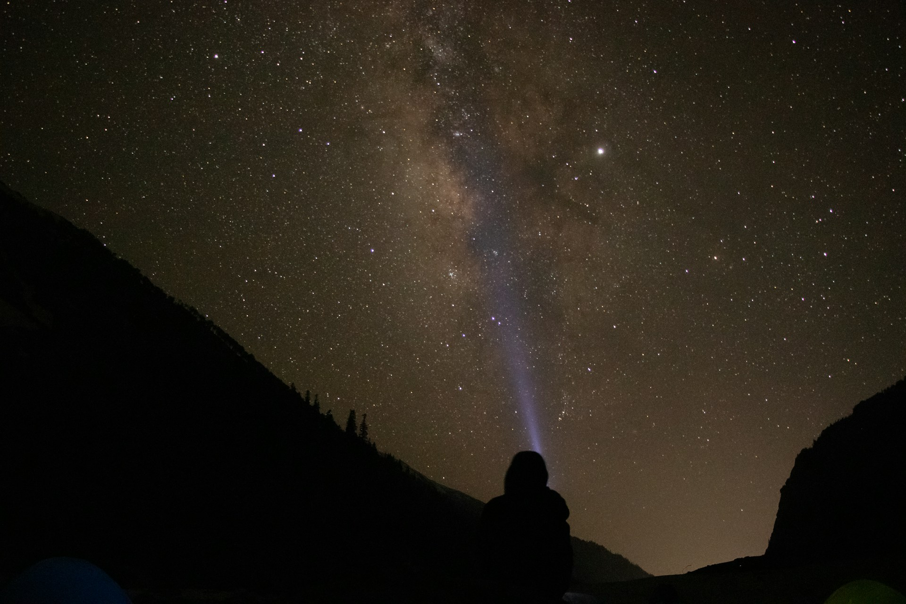

E-catch様 コーポレートサイト
Overview
野球グローブメーカー“E-catch”様のコーポレートサイト制作をしました。ざっくりとしたイメージからヒアリングにて要件定義を行い、一気通貫してサイト制作を行いました。
- URL：
- https://www.hogehoge.co.jp
- 担当業務：
- 要件定義、デザイン、使用技術選定、コーディング
- 製作時間：
- 20時間
- サイトの目的：
- 認知拡大・名刺代わりとなるコーポレートサイト作成
- デザインについて：
-
情報設計
競合数社を調査しクライアントの特徴を整理、ポジショニング。
コンセプト決定
イメージカラーからサイトのイメージを決定。
メインカラーは黒(#000000)よりやや明るめの黒を使用しイメージを損なわない程度に抜け感を出しました。
全体的にシンプルなデザインだったため、セクションごとにアイコンを使用することでアクセントにしました。


ワイヤーフレーム製作
名刺代わりとなるサイトとのことだったので、サイトマップを制作。代表者の生い立ちから紹介することで創業の思いを伝え、商品のラインナップが簡易的なカタログとして理解できるような構成にしました。